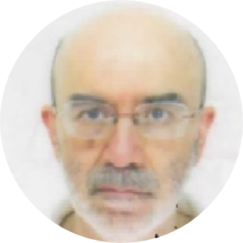

|  |
Paolo ChiroliNuclear Engineer, Master's Degree by Polytechnic University of Milan Project Management Professional (PMP), certified by PMI I am a Project Management Specialist in
Thales Alenia Space s.p.a.
|
| Dates | Work |
|---|---|
| 1985-1989 | SW Engineer in Laben s.p.a. |
| 1989-1997 | Project Leader in Laben s.p.a. |
| 1997-2011 | Responsible of Electrical Ground Support Equipment (EGSE) department in Thales Alenia Space Italy |
| 2011-present | Responsible of Projects Management in the Centre of Competence for SW Solutions in Thales Alenia Space Italy |